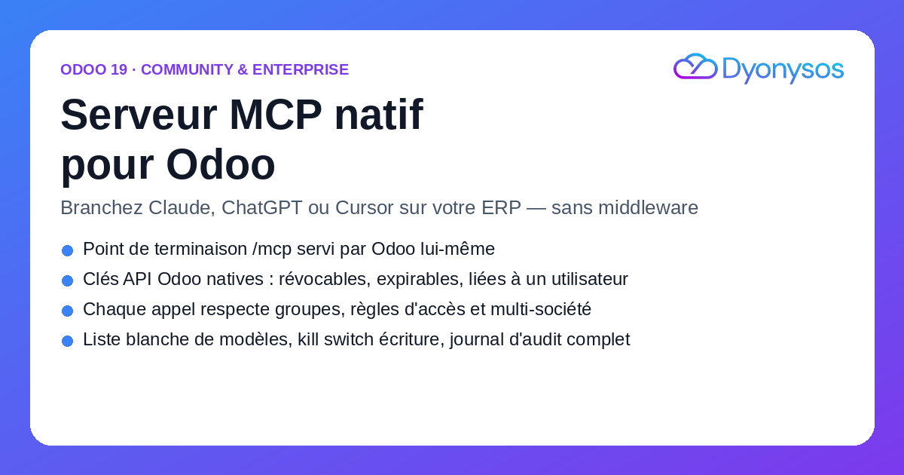
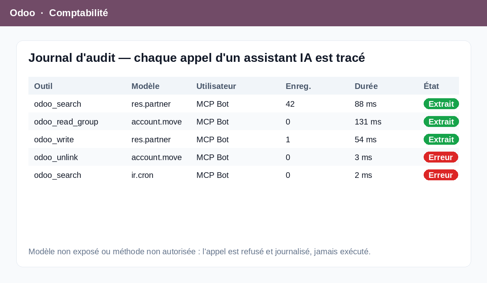

Le module ajoute la route /mcp à votre Odoo : un serveur Model Context Protocol
complet (JSON-RPC 2.0 sur HTTP streamable, protocole 2025-06-18). Aucun service Python à héberger,
aucun conteneur supplémentaire, aucune synchronisation de données : l'assistant interroge Odoo en direct.
Dans votre client MCP, une seule ligne de configuration : l'URL https://votre-odoo/mcp
et l'en-tête Authorization: Bearer <clé>.

Authentification par clé API Odoo native (scope odoo.mcp), révocable et expirable.
Chaque appel s'exécute avec les droits de l'utilisateur porteur : groupes, règles d'accès, règles
d'enregistrement et multi-société s'appliquent. Jamais de superutilisateur.
Liste blanche de modèles, opérations autorisées au cas par cas (lecture, création, écriture, suppression), domaine de restriction, liste de champs exposés, méthodes appelables et limites de pagination. Un interrupteur global coupe toute écriture.
Journal d'audit de chaque appel : outil, modèle, enregistrements touchés, durée, adresse IP, arguments et erreur éventuelle. Purge automatique après la durée de rétention choisie.
odoo_list_models · odoo_model_fields · odoo_search ·
odoo_read · odoo_count · odoo_read_group (agrégations de type
tableau croisé) et, si vous les activez, odoo_create, odoo_write,
odoo_unlink et odoo_call_method (liste blanche de méthodes métier comme
action_post). Les schémas des modèles autorisés sont aussi publiés comme
ressources MCP.
odoo.mcp.Compatibilité : Odoo 19 Community et Enterprise. Aucune dépendance Python supplémentaire.
Développé par DYONYSOS — intégration Odoo, automatisation et IA pour PME.
Support : welcome@dyonysos.fr · dyonysos.fr